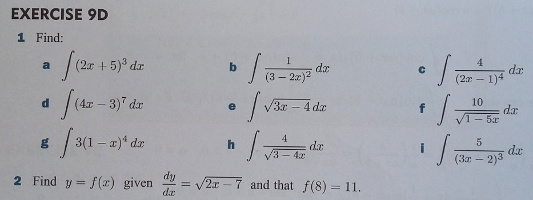

Autoría inicio rápido 2: variables de la pregunta
1 - Primera pregunta | 2 - Variables de pregunta | 3 - Retroalimentación | 4 - Aleatorización | 5 - Test de preguntas | 6 - Preguntas de varias partes | 7 - Simplificación | 8 - Cuestionarios
Esta parte de la guía rápida de creación trata sobre el uso de variables de pregunta. El siguiente vídeo explica el proceso:
Pregunta de Ejemplo
Para este ejemplo, trabajaremos con un sencillo problema de integración. A continuación se muestra un conjunto típico de ejercicios de práctica.

Centrémonos en el problema de encontrar . Cree una nueva pregunta STACK. Como antes, daremos a nuestra pregunta un nombre de pregunta, digamos "Ejemplo de integración".
Uso de variables de pregunta
Los siguientes pasos serían añadir el texto de la pregunta y, a continuación, añadir la respuesta del profesor -1*(x-1)^(-3)+c al campo respuesta modelo y al árbol de respuestas potenciales. Sin embargo, normalmente se hará referencia a la expresión y a la respuesta modelo más de una vez, por lo que suele ser más fácil asignarlas a "variables de pregunta" utilizando el campo opcional Variables de la pregunta.
Añada lo siguiente a las variables de la pregunta
exp: 3*(x-1)^(-4);
ta: int(exp,x)+c;
La codificación de las variables en cuestión se basa en Maxima, que tiene una sintaxis inusual para la asignación. En particular, los dos puntos : se utilizan para asignar un valor a una variable. Así, para asignar el valor 5 a a1, utilizamos la sintaxis a1:5. En general, es una buena práctica asignar nombres de varios caracteres a las variables, ya que los nombres de un solo carácter están pensados para ser introducidos por los alumnos. Esto se debe a que las variables de varios caracteres definidas por el autor no pueden ser introducidas por defecto por los alumnos. Además, añadir punto y coma al final de cada línea es opcional, pero una buena práctica.
Observe que estamos utilizando el CAS para determinar la respuesta del modelo llamando a la función int() para encontrar la antiderivada. Cuando el CAS determina una antiderivada, no incluye una constante de integración, por lo que tenemos que añadirla nosotros mismos.
Ahora será mucho más rápido rellenar el resto de la pregunta. Añade lo siguiente al texto de la pregunta:
Encuentre \(\int{@exp@} \mathrm{d}x\)
[[input:ans1]] [[validation:ans1]]
Observe que hemos definido una variable local exp, y utilizado el valor de la misma en el texto de la Pregunta. Hay una diferencia entre las matemáticas encerradas entre símbolos \(..\) y símbolos {@..@}. Todos los campos basados en texto de la pregunta, incluida la retroalimentación, son texto CAS. Se trata de HTML en el que se pueden insertar las matemáticas. LaTeX se coloca entre \(..\)s, y las expresiones CAS (incluyendo sus variables) entre símbolos coincidentes {@..@}. Las expresiones CAS se evalúan en el contexto de las variables de la pregunta y se muestran como LaTeX.
Dado que aquí hemos utilizado {@exp@}, el usuario no verá un en la pantalla cuando se instancie la pregunta, sino el valor mostrado de exp:
En la entrada ans1, especifica la respuesta modelo como la variable ta.
En el árbol de respuestas potenciales, ponga Answer test en AlgEquiv, ponga SAns en ans1 y ponga TAns en ta.
Es una buena práctica utilizar variables de pregunta a menudo, ya que ahorran tiempo y le permiten cambiar las propiedades de la pregunta fácilmente en el futuro.
Próximo paso
Ahora debería poder utilizar variables de pregunta en STACK.